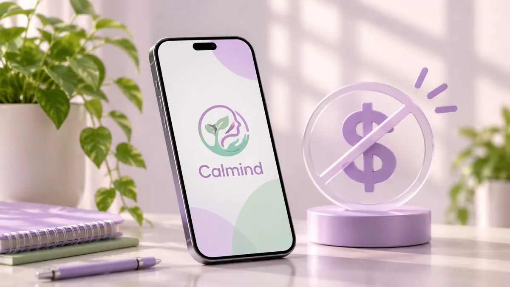
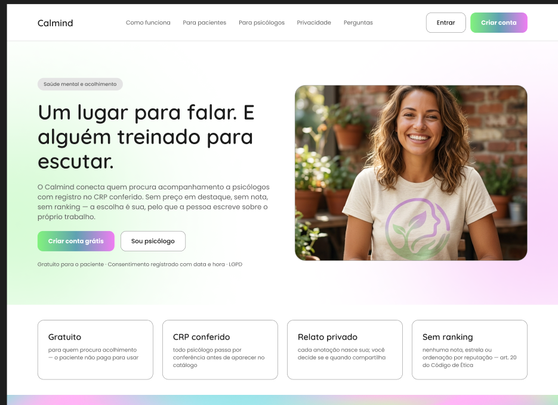
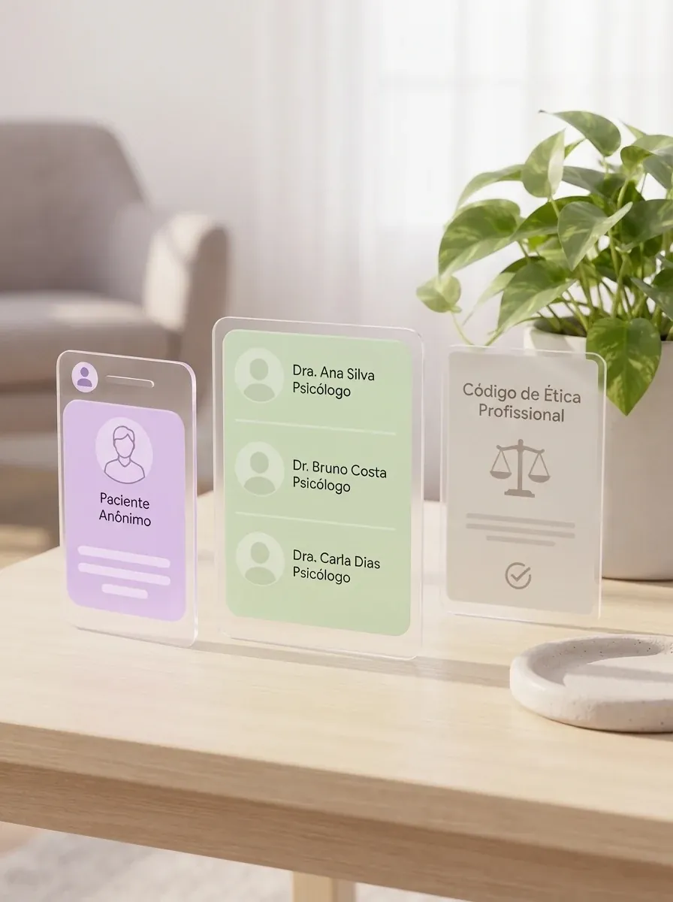
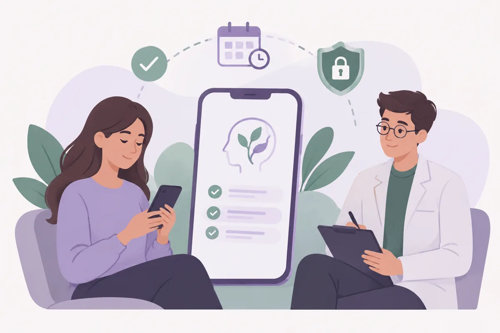

Gratuito
para quem procura acolhimento: o paciente não paga para usar
O Calmind conecta quem procura acompanhamento a psicólogos com registro no CRP conferido. Sem preço em destaque, sem nota, sem ranking: a escolha é sua, pelo que a pessoa escreve sobre o próprio trabalho.


para quem procura acolhimento: o paciente não paga para usar
todo psicólogo passa por conferência antes de aparecer no catálogo
cada anotação nasce sua; você decide se e quando compartilha

nenhuma nota, estrela ou ordenação por reputação: art. 20 do Código de Ética
Escolhe se entra como paciente ou como psicólogo. A escolha define o que o app mostra daí em diante e não muda depois.
Já tem psicóloga? Use o código de convite de 6 caracteres. Ainda não tem? Navegue pelo catálogo e leia o que cada profissional escreveu.
Relatos, tarefas e conversa no mesmo lugar. Cada relato começa privado: compartilhar é uma escolha, marcada na hora de escrever.

Cada aceite grava versão do texto, data e hora. Dá para consultar depois o que foi aceito, e quando.
O seletor “Compartilhado / Só para mim” fica acima do campo de texto e aparece sem rolagem.
O prontuário do psicólogo mostra apenas os relatos marcados como compartilhados.
Quem pode ver
O que a psicóloga vê no prontuário
Espaço reservado. Os depoimentos entram depois do teste de usabilidade com pessoas de fora do grupo.
“Escrevi coisa que nunca tinha falado em voz alta. Saber que só eu via até eu decidir mudou tudo.”
“Chego na sessão já sabendo o que aconteceu na semana. O tempo da consulta rende mais.”
“O código de convite resolveu o vínculo com quem eu já atendia fora do app.”
O uso do aplicativo é gratuito para o paciente. Isso não significa que as consultas com profissionais sejam gratuitas.
Não. Ela vê apenas os relatos que você escolhe compartilhar. Os relatos marcados como “Só para mim” são privados.
O cadastro pede o número de registro no CRP e um documento comprobatório. O perfil passa por conferência antes de aparecer no catálogo.
As condições de troca de profissional serão informadas no aplicativo. Esta página apresenta o protótipo do Calmind.
Não. O Calmind apoia a comunicação e a organização do acompanhamento. Não substitui a terapia nem o atendimento de urgência.
As condições de exclusão e de conservação dos registros serão informadas na política de privacidade do aplicativo.
Criar a conta leva menos de dois minutos e não pede cartão.